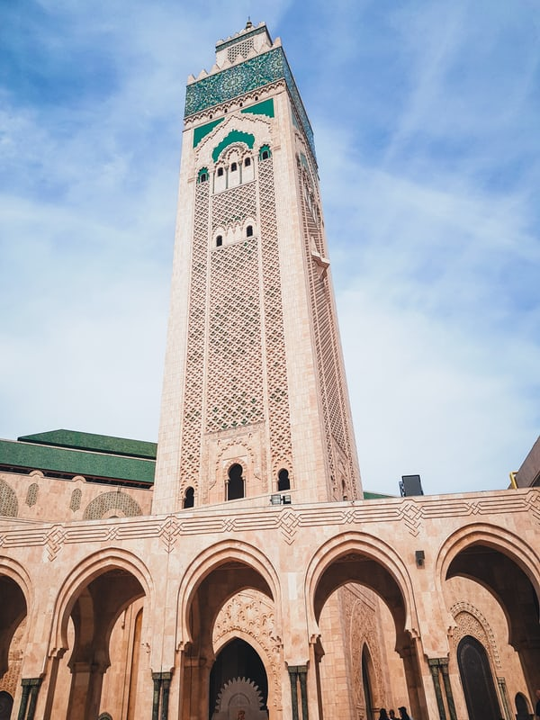
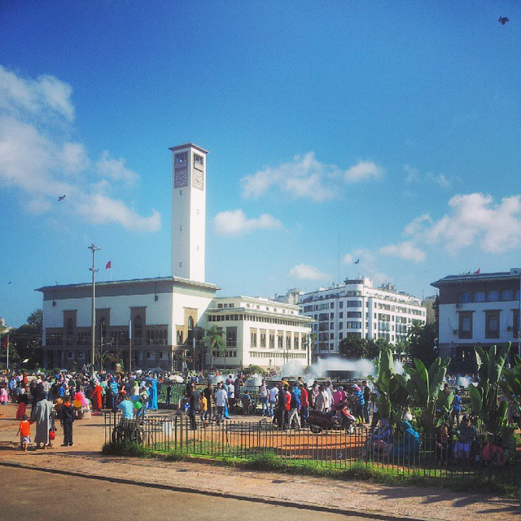
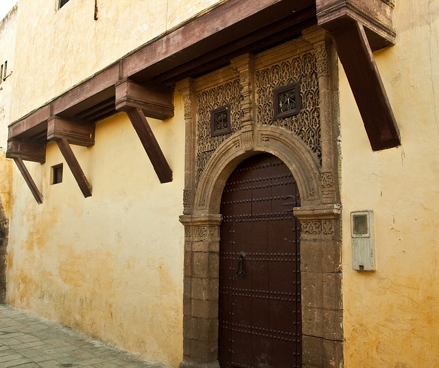
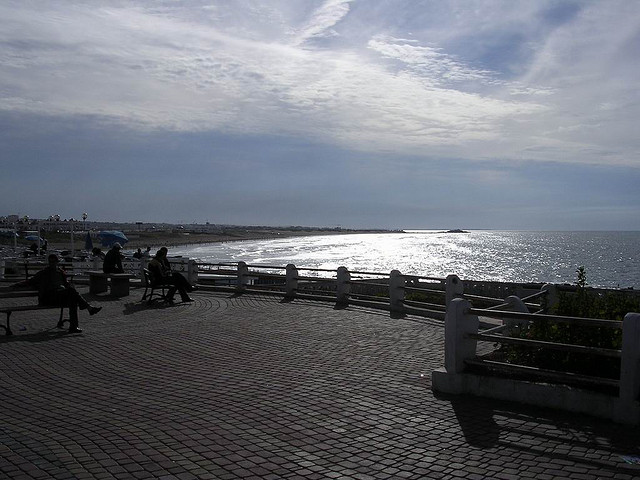
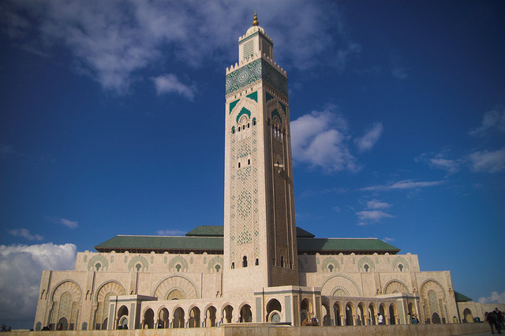

casablanca est une ville située au centre-ouest du Maroc. Capitale économique du pays5,6 et plus grande ville du Maghreb par la population 7 mellion, elle est située sur la côte atlantique, à environ 80 km au sud de Rabat, la capitale administrative.
Au centre de Casablanca, la place Mohamed V est un bel exemple de la soif de modernisme à l’occidentale qui frappait le Maroc dans les années 1920 sous le protectorat français. Vous y trouverez de prestigieux bâtiments administratifs et des banques, le tout mêlant le style arabo-andalou et Art Déco. Le soir venu, ne manquez pas la fontaine monumentale à l’ouest de la place, où des spectacles de son et lumière sont donnés.
Construit à partir de 1918 pour accueillir les familles venant des quatre coins du Maroc, le quartier des Habbous est un exemple réussi de médina moderne qui a su garder un style traditionnel. Aujourd’hui y vivent surtout des commercants et des libraires. Le mieux est encore de s’y perdre et d’en profiter pour faire quelques emplettes !
Également connue sous le nom d’Ain Diab, la corniche de Casablanca est un lieu prisé des habitants qui viennent y prendre l’air le week-end. C’est également là que vous trouverez les plus hauts lieux de la nuit casaouia. Promenez-vous le long de l’océan et profitez du panorama !
Ouverte aux non-musulmans, cette mosquée est absolument extraordinaire : plus haut minaret du monde musulman, plus grand espace de prière d’Afrique, et véritable symbole de la ville. Ne manquez pas de la visiter pour découvrir un étonnant mélange de techniques modernes et de savoir-faire ancestral marocain. Superbe !
La région du Grand Casablanca, d'une superficie de plus 1 615 km2, produit à elle seule 19 % du PIB marocain, possède 42 % des établissements industriels, attire 48 % des investissements et compte 30 % du réseau bancaire ainsi que presque la totalité des sièges des banques et assurances. Elle jouit d'infrastructures portuaires, aéroportuaires, ferroviaires et routières qui facilitent la circulation des marchandises et des personnes. Le port de Casablanca cumule près de 33 % des échanges extérieurs avec quelque 20 Mt/an. Celui de Mohammédia 11 %. L'aéroport Mohammed V concentre 40 % des mouvements d'avions avec 43 000 t/an et 51 % des mouvements de passagers.